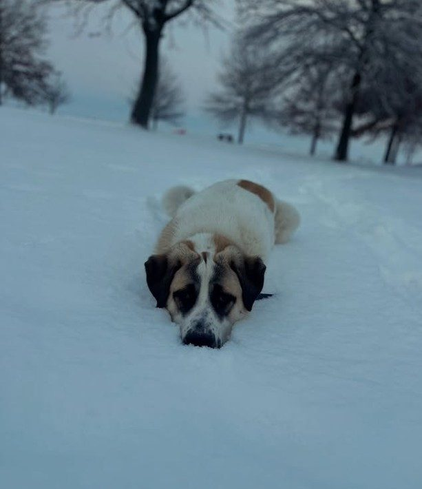

Sven · Myotonic buckling
A beautiful black and white buckling with excellent bloodlines. Great for breeding or as a pet.
$300Ask about Sven
Our animals
Registered myotonic goats, Highland cattle, and Kunekune pigs, raised gently on pasture.
Available now
A beautiful black and white buckling with excellent bloodlines. Great for breeding or as a pet.

Our second black and white buckling. Very friendly, with excellent conformation.

Our first doeling. She will make an excellent brood doe.
Meet the animals

Rhode Island Reds, Barred Rocks, and Ameraucanas, all pasture-raised and free to forage.
One to two dozen eggs a day
Runner, Ancona, and Mallard ducks. They lay rich, flavorful eggs and help control pests around our ponds.
Duck eggs weekly
Shaggy, gentle giants well suited to Kansas weather. They help keep our pastures healthy.
Breeding program established
Our “fainting goats” keep the brush down and keep us entertained.
New kids every spring
With short, upturned snouts, they graze rather than root. Their friendly personalities make them a farm favorite.
Breeding stock & pork
Our livestock guardian dogs work day and night to keep every animal safe from predators.
Always on duty